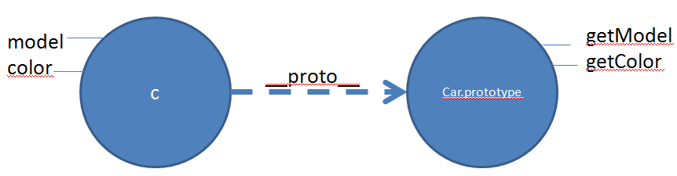
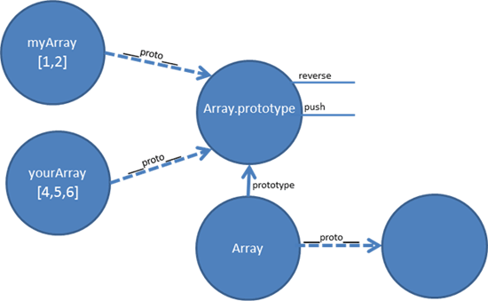

Be carreful when you declare the function and when you use it!
isScrumMaster(); // true
isPo(); // TypeError: undefined is not a function
isDev(); // TypeError: undefined is not a function
function isScrumMaster(){ return true; }
var isPo = function(){ return true; };
this.isDev = function(){ return true; };
isScrumMaster(); // true
isPo(); // true
isDev(); // true
Named function expression
Syntax is valid but only used in rare cases
var woman = function human()
{
typeof woman; // "function"
typeof human; // "function"
return "Hello";
};
typeof woman; // "function"
typeof human; // "undefined"
woman(); // "Hello"
human(); // ReferenceError: human is not defined
Function inside an object
var car =
{
model: "Bugatti",
describe: function()
{
return "I'm a " + this.model;
}
};
// describe is a property declaration in an object literal (car) that uses a function expression for the value
car.describe(); // "I'm a Bugatti"
Object and function properties
var obj = {};
obj.prop = "objProp";
var fn = function(){};
fn.prop = "fnProp";
console.log(obj.prop, fn.prop); // Both have a property
new operator
This diapo talks about the value of `this` when a function is called with and without new.
Let's use the "constructor" function User:
function User()
{
this.name = "John";
}
var A = User(); // Without new
typeof A; // "undefined"
A.name; // TypeError: Cannot read property 'name' of undefined
name; // "John" ; global scope pollution!
// `this` equals `window` (or the current environment global object) when new isn't specified
name = undefined; // reset for B sample
var B = new User(); // With new
console.log(B); // User object
console.log(B.name); // "John"
console.log(name); // undefined
// Extra:
function User()
{
name = "John"; // `this.` removed and `var` keyword omitted
// => global scope pollution
// Result is similar as A example
}
Ensure new
Silent auto-correction.
This is only useful if you intent to use Person as a constructor (if you want to have 'Person' entities).
function Person()
{
if(!(this instanceof arguments.callee))
{
// If user accidentally omits the new keyword, this will silently correct the problem...
// See: http://stackoverflow.com/questions/383402/is-javascript-s-new-keyword-considered-harmful
return new Person();
}
//...
}
var p1 = new Person(); // OK
var p2 = Person(); // still OK
typeof & instanceof
(and constructor)
function Person(name)
{
this.name = name;
}
var bob = new Person('Bob');
typeof bob; // "object"
bob instanceof Person; // true
bob instanceof Date; // false
bob.constructor; // the Person function!
Similar objects
Let's say I'm coding an application to manage programmers
I wan't everybody to have a drinkCoffee method.
Thus, the following code might break if I'm not carreful for each instance creation.
Note that I'm using object notation rather than a constructor function.
var programmerA =
{
name: "john",
drinkCoffee: function(){return true;}
};
var programmerB =
{
name: "elodie",
drinkCoffee: function(){return true;}
};
var programmerC =
{
name: "nicolas",
code: function(){return true;}
};
programmerA.drinkCoffee();
programmerB.drinkCoffee();
programmerC.drinkCoffee(); // TypeError: Object #<Object> has no method 'drinkCoffee'
Per instance
Now let's use a constructor function.
Also verify that every instance has its own values: after execution, A has danced, not B.
function User()
{
this.name = "John";
this.hasDanced = false;
this.dance = function()
{
console.log(this.name + " is dancing");
this.hasDanced = true;
};
}
var A = new User();
A.dance();
A.hasDanced; // true
var B = new User();
B.hasDanced; // false
Exercice
Add a method changeName to the previous slide code
/* Solution on next slide */
Solution
function User()
{
this.name = "John";
this.hasDanced = false;
this.dance = function()
{
console.log(this.name + " is dancing");
this.hasDanced = true;
};
this.changeName = function(newName)
{
this.name = newName;
};
}
var A = new User();
A.name; // "John"
A.changeName("Brendan");
A.name; // "Brendan"
// Also note that name is also directly accessible (it's a public property)
A.name = "Nicolas";
A.name; // "Nicolas"
How ensure every programmer has a drinkCoffee method?
Instanciate programmers with a constructor function
function Programmer(name)
{
this.name = name;
this.drinkCoffee = function()
{
return true;
};
}
var programmerA = new Programmer("john");
var programmerB = new Programmer("elodie");
var programmerC = new Programmer("nicolas");
programmerA.drinkCoffee();
programmerB.drinkCoffee();
programmerC.drinkCoffee(); // ok!
// We can even add a custom method to programmerC:
programmerC.code = function(){return true;};
// but...
programmerA.drinkCoffee === programmerB.drinkCoffee; // false ; it's not the same method! Why?
/*
Because a new `drinkCoffee` function is generated on each call to the constructor!
This can become problematic in some cases.
*/
Adding a prototyped method
function Programmer()
{
}
Programmer.prototype.drinkCoffee = function()
{
return true;
};
var dev = new Programmer();
if(dev.drinkCoffee())
{
alert("Coffee cup is now empty");
}
var dev2 = new Programmer();
dev.drinkCoffee === dev2.drinkCoffee; // true
// Now we are confident that all programmers have a drinkCoffee method! And there is only one!
Memory footprint
Let's have a look at memory consumption.
This was done with a WebKit javascript engine.
var MAX = 50000;
function Programmer(name)
{
this.name = name;
this.getBlock = function()
{
var block = "azertyuiop";
return block + " " + name;
};
}
var programmers = [];
for(var i = 0; i < MAX; ++i)
{
programmers.push(new Programmer("john"+i));
}
/*
Execution time: 0.063 seconds
Memory footprint: 27.809 Mo
*/
//-----------------------------------------
function Programmer(name)
{
this.name = name;
}
Programmer.prototype.getBlock = function()
{
var block = "azertyuiop";
return block + " " + this.name;
};
var programmers = [];
for(var i = 0; i < MAX; ++i)
{
programmers.push(new Programmer("john"+i));
}
/*
Execution time: 0.047 seconds
Memory footprint: 13.785 Mo
Wow, much better!
It is because we define a getBlock function each time a Programmer is instanciated in the first example.
However, when using a prototype method, there is only 1 function in memory.
*/
Same implementation?
This example demonstrates another way to do this with the constructor function (by storing the drinkCoffee function outside).
However, as demonstrated, it can also lead to issues (that we don't have with the prototype implementation):
var drink = function(){return true;};
function Programmer(name)
{
this.name = name;
this.drinkCoffee = drink;
}
var programmerA = new Programmer("john");
var programmerB = new Programmer("elodie");
programmerA.drinkCoffee === programmerB.drinkCoffee; // true
// let's change drink !
drink = function(){return false;};
var programmerC = new Programmer("nicolas");
programmerA.drinkCoffee(); // true
programmerB.drinkCoffee(); // true
programmerC.drinkCoffee(); // false ; damn!
Add a method to all objects, even if they already exist
When a method or property is added to the prototype, it is immediately accessible to all instances, even thoses already existing.
function User(param1)
{
this.name = param1;
this.age = Math.floor(Math.random() * 100) + 1; // 1-100
}
var userA = new User("john");
typeof userA.getAge; // "undefined"
// Add getAge the the User prototype (userA not mentionned):
User.prototype.getAge = function()
{
return this.age;
};
typeof userA.getAge; // "function" ; wow, getAge available!
userA.getAge();
.hasOwnProperty() & in
.hasOwnProperty() is a method available to all objects.
It determine whether an object has the specified property as a direct property of that object.
Unlike the in operator, this method does not check the object's prototype chain.
function User(param1)
{
this.name = param1;
this.age = Math.floor(Math.random() * 100) + 1; // 1-100
}
User.prototype.getAge = function()
{
return this.age;
};
var userA = new User("john");
if("getAge" in userA) // true
{
console.log("getAge in userA");
}
if("name" in userA) // true
{
console.log("name in userA");
}
if(userA.hasOwnProperty("getAge")) // false
{
console.log("userA hasOwnProperty getAge");
}
if(userA.hasOwnProperty("name")) // true
{
console.log("userA hasOwnProperty name");
}
Remember: affectation!
Be carreful, prototyped method is only available after affectation!
var car = new Car("Ford Mustang");
car.getInfo(); // TypeError: Object #<Car> has no method 'getInfo'
function Car(model)
{
this.model = model;
this.color = "red";
}
Car.prototype.getInfo = function() // Affectation needs to occurs before!
{
return 'A ' + this.color + ' ' + this.model + '.';
};
Prototype or priviledged?
Prototypical methods can be applied to all objects derived from the same constructor even after their creation, with incredibly low performance impact.
On the other hand, priviledged methods (such as dance) are hidden from manipulations from outside of the scope and their addressing is a wee bit faster than their prototypical counterparts.
Therefore, you need to see both as tools you'll have to find fit depending on every situation you encounter. If security or call speed are important, use a discrete method, if you want flexibility and go easy on the RAM for a multitude of objects, use the prototype.
function User(param1)
{
this.name = param1;
this.age = Math.floor(Math.random() * 100) + 1; // 1-100
var move = "jump";
this.dance = function() // priviledged method
{
return move;
};
}
Programmer.prototype.drinkCoffee = function()
{
// `move` is out of scope here
return true;
};
Similar properties added in constructor VS in prototype
When the engine looks for the dance method, it first look on the instance, then on the prototype.
This is why the instance method "override" the prototype method.
function Human()
{
this.dance = function() // Privileged
{
return true;
};
}
// Should return false, but will be overridden
Human.prototype.dance = function() // Public
{
return false;
};
var john = new Human();
john.dance(); // true (Calling the instance method, not the prototype method)
Extends VS override prototype
function Car(model)
{
this.model = model;
this.color = "red";
}
// Extend
Car.prototype.getModel = function()
{
return this.model;
};
Car.prototype.getColor = function()
{
return this.color;
};
// VS
// Override (erasing any previous method)
Car.prototype.
{
getModel: function()
{
return this.model;
},
getColor: function()
{
return this.color;
}
};
/*
Be carreful not to remove any method that was there before!
Extends is more secure, but painful to write and debug (as many affectations as methods).
You can use a helper such as jQuery.extend or write your own:
function myExtends(func, methods)
{
for(var method in methods)
{
if(func.prototype[method])
{
console.warn(method + " already defined, overwriting");
}
func.prototype[method] = methods[method];
}
}
// Extends Car.prototype with methods
var methods =
{
method1: function(){},
method2: function(){},
method3: function(){}
//...
};
myExtends(Car, methods);
}
*/
instance variable VS prototype variable VS static variable
function User(param1)
{
this.name = param1;
}
var userA = new User("john");
var userB = new User("caroline");
userA.adult; // undefined
User.prototype.adult = true;
userA.adult; // true
userB.adult; // true
//---
userA.age = 30;
userA.age; // 30
userB.age; // undefined
User.prototype.age = 25;
userA.age; // 30 ; instance value first!
userB.age; // 25
//---
User.maxAge = 100; // Only accessible through `User.`
userA.maxAge; // undefined
userA.constructor.maxAge; // 100
js class
function User()
{
// [Public] Variables
this.pub = "beer";
// [Private] Variables
var priv = "secret" + Math.random();
// [Privileged] Functions
this.getPriv = function()
{
return priv;
};
// [Private] Functions
function doStuff()
{
return priv;
}
}
// [Prototype] Variables
User.prototype.color = "red";
// [Prototype] Functions
User.prototype.getDate = function()
{
return new Date();
};
// [Static] Properties
User.city = 'lyon';
// [Static] Functions
User.getCity = function()
{
return User.city;
};
// Examples:
var t = new User();
//console.log(t);
t.pub; // "beer"
t.priv; // undefined
t.getPriv(); // "secret"
t.doStuff(); // error: t.doStuff is not a function
t.city; // undefined
User.city; // "lyon"
t.getCity(); // error: t.getCity is not a function
User.getCity(); // "lyon"
t.color; // "red"
t.getDate(); // Fri Oct 08 2010 18:13:43 GMT+0200...
// Notice
t.getPriv = "owned"; // let's replace the method!
// http://www.crockford.com/javascript/private.html
Prototype is an object!
Prototypes are just objects. We can give them methods, properties !
function Car(model)
{
this.model = model;
this.color = "red";
}
Car.prototype.getModel = function()
{
return this.model;
};
Car.prototype.getColor = function()
{
return this.color;
};
Car.prototype.tires = 4;
typeof Car; // "function"
typeof Car.prototype; // "object"
// Use watch in your debugger
Car;
Car.prototype; // an object with 2 methods (getModel & getColor) and another attribute (tires)
// And what about instances ?
var c = new Car();
typeof c; // "object"
typeof c.prototype; // "undefined" ; Hmm ok. So .prototype only applies to constructor function.
Get the prototype of an object/instance

function Car(model)
{
this.model = model;
this.color = "red";
}
Car.prototype.getModel = function()
{
return this.model;
};
Car.prototype.getColor = function()
{
return this.color;
};
var c = new Car("BMW M3");
c.prototype; // undefined
Object.getPrototypeOf(c); // Same as Car.prototype
// In some environment, you can use .__proto__ for debug purposes.
// Object.getPrototypeOf is recent but more than recommended over .__proto__
c.__proto__ === Object.getPrototypeOf(c) && Object.getPrototypeOf(c) === Car.prototype; // true
// I see `__proto__` as "ascending", and `.prototype` as descending.
//----------
// Now let's have a look to a simple object:
var point =
{
x: 5,
y: 15,
add: function(otherPoint)
{
this.x += otherPoint.x;
this.y += otherPoint.y;
}
};
point;
point.prototype; // undefined
Object.getPrototypeOf(point);
Object.getPrototypeOf(point) === Object.prototype; // true
// The prototype of point is the object stored under Object.prototype.
Default API
Multiple objects can maintain references to the same prototype object: 
Have a look at thoses:
Array.prototype
Number.prototype
String.prototype
Date.prototype
/*
Date also has static methods :
Date.parse( )
Date.UTC( )
*/
Math // no prototype!
// Unlike the other global objects, Math is not a constructor. All properties and methods of Math are static.
// What would you do with a Math instance?
// Same for JSON
JSON
var myArray = [1, 2];
myArray.push(3);
myArray.reverse();
myArray.pop();
myArray.length; // Object property, only for myArray instance
__proto__
prototype is a property of a Function object. It is the prototype of objects constructed by that function.
__proto__ is internal property of an object, pointing to its prototype.
function Point(x, y)
{
this.x = x;
this.y = y;
}
var myPoint = new Point();
// The following are all true
myPoint.__proto__ == Point.prototype;
myPoint.__proto__.__proto__ == Object.prototype; // Prototype chain goes up to Object!
myPoint instanceof Point;
myPoint instanceof Object;
myPoint.prototype === undefined; // instance object as no prototype
Resolution
At execution, the engine looks for the method on the object, then on its prototype, and up to the chain.
It runs through the prototype chain until it finds the method/property according to its name or stops at top level if not found.
var foo = {name: "foo", one: 1, two: 2};
var bar = {two: "two", three: 3};
bar.__proto__ = foo; // foo is now the prototype of bar.
// If we try to access foo's properties from bar
// from now on, we'll succeed.
bar.one // Resolves to 1.
// The child object's properties are also accessible.
bar.three // Resolves to 3.
// Own properties shadow prototype properties
bar.two; // Resolves to "two"
foo.name; // unaffected, resolves to "foo"
bar.name; // Resolves to "foo"
Function object prototype
var PointA =
{
x : 10,
y : 5
};
var PointB = function (x, y)
{
this.x = x;
this.y = y;
}
PointA.__proto__ == Object.prototype;
PointB.__proto__ == Function.prototype;
"JavaScript is fundamentally about objects."
"Objects can be produced by constructors, which are functions which initialize objects."
Function.__proto__ == Object.prototype; // true
var pB = new PointB();
pB.__proto__ === PointB.prototype -> PointB.__proto__ === Function.prototype -> Function.__proto__ === Object.prototype -> Object
/*
When you are using pB, all methods define on thoses objects are available:
- PointB.prototype
- Function.prototype
- Object.prototype
At execution, the engine looks for the method on pB, then on PointB.prototype, then on Function.prototype and then Object.prototype.
It runs through the prototype chain until it finds it or stops at top level if not found.
For instance, toString is only found under Object.prototype:
*/
Object.prototype.toString; // function toString() { [native code] }
Built-in prototype
How about adding a forEach method to all arrays?
if(!Array.prototype.forEach)
{
// Dummy implementation
Array.prototype.forEach = function(fn)
{
for(var i = 0; i < this.length; i++)
{
fn(this[i], i, this);
}
};
}
["a", "b", "c"].forEach(function(value, index, array)
{
console.log(value + " at position " + index + "/" + (array.length - 1));
};
// https://developer.mozilla.org/en-US/docs/Web/JavaScript/Reference/Global_Objects/Array/forEach
Exercice
Add a capitalize method to every String object (first letter in uppercase and downcases all the others)
/* TODO */
var text = "hello world!";
text.capitalize(); // "Hello world!
Solution
String.prototype.capitalize = function()
{
// charAt better than this[0] in case this.length == 0
return this.charAt(0).toUpperCase() + this.substr(1).toLowerCase();
};
var text = "hello world!";
text.capitalize(); // "Hello world!
Warning: it is dangerous
Some librairies are making use of this concept to enhance the DOM, such as prototypejs:
They are pretty helpful, but in the end it is not a good idea:
"This technique is called monkey patching and breaks encapsulation. While used by popular frameworks such as Prototype.js, there is still no good reason for cluttering built-in types with additional non-standard functionality.
The only good reason for extending a built-in prototype is to backport the features of newer JavaScript engines; for example Array.forEach, etc."
https://developer.mozilla.org/en-US/docs/Web/JavaScript/Guide/Inheritance_and_the_prototype_chain
Object.prototype.toString = function(){return "test";}
function User(){}
(new User).toString(); // "test"
Transform an object into an array
Remember: don't use __proto__ in your code! This is for demo purposes. Use Object.create.
var o = {};
// inherit from the same prototype as an array object
o.__proto__ = Array.prototype;
// now we can invoke any of the array methods ...
o.push(3);
// Use Object.create() rather than __proto__ (environment dependant)
var o2 = Object.create(Array.prototype);
// When you do
var o = new Foo();
// JavaScript actually just does
var o = new Object(); // or if you prefer: var o = {};
o.[[Prototype]] = Foo.prototype; // Define the prototype of o
o.Foo(); // Calls the constructor with `o` as this
Javascript is an object oriented programming language.
Prototype-based programming -> a form of object-oriented programming (think "code reuse"). Classical inheritance:
Explicit classes: Class and instance are distinct entities.
Classes can be organized into a hierarchy
Prototypal inheritance:
No explicit classes: All objects are instances
Objects are allowed to be linked together in a hierarchy
Inheritance is performed via a process of cloning existing objects that serve as prototypes.
Adding a property to the prototype of an object will make it available to that object, as well as to all of the objects which inherit from it.
function Person(){}
Person.prototype.eat = function(){};
function Programmer(){}
Programmer.prototype = new Person();
var dev = new Programmer();
dev instanceof Programmer; // true
dev instanceof Person; // true
dev instanceof Object; // true
Bad example
This one works too, but...
Programmer.protoype is the same as Person.prototype: impossible to add specific methods to Programmer!
function Person(){}
Person.prototype.eat = function(){};
function Programmer(){}
Programmer.prototype = Person.prototype;
var dev = new Programmer();
dev instanceof Programmer; // true
dev instanceof Person; // true
dev instanceof Object; // true
Exercice
function Person(firstName, lastName)
{
this.firstName = firstName;
this.lastName = lastName;
}
Person.prototype.getName = function()
{
return this.firstName + " " + this.lastName;
};
// Write the programmer function that inherits from Person
var dev = new Programmer("John", "Carmack");
dev.getName(); // "John Carmack"
Inheritance through the prototype chain
function Person(name)
{
this.name = name;
}
Person.prototype.drinkCoffee = function(){return true;};
function Programmer(name)
{
this.base = Person;
this.base(name);
this.level = 8;
}
Programmer.prototype = new Person();
// Add a method
Programmer.prototype.code = function(){return true;};
//---
var bob = new Programmer('Bob');
bob instanceof Programmer; // true
bob instanceof Person; // true
bob.name; // "Bob"
bob.hasOwnProperty('name'); // true
bob.level; // 8
bob.hasOwnProperty('level'); // true
bob.code(); // true
bob.hasOwnProperty('code'); // false
bob.drinkCoffee(); // true
bob.hasOwnProperty('drinkCoffee'); // false
Inheritance helper
// Credits: http://www.kevlindev.com/tutorials/javascript/inheritance/index.htm
function inherits(subClass, baseClass)
{
function inheritance() {};
inheritance.prototype = baseClass.prototype;
subClass.prototype = new inheritance();
subClass.prototype.constructor = subClass;
subClass.baseConstructor = baseClass;
subClass.superClass = baseClass.prototype;
};
function Person(name)
{
this.name = name;
}
function Programmer(name)
{
this.coder = true;
}
inherits(Programmer, Person); // Inheritance
//-----
// Copy references for all properties of the prototype
function inherits2(subConstructor, baseConstructor)
{
var subPrototype = {};
var basePrototype = baseConstructor.prototype;
for(var key in basePrototype)
{
subPrototype[key] = basePrototype[key];
}
subConstructor.prototype = subPrototype;
};
//-----
// See also: http://phrogz.net/JS/classes/OOPinJS2.html